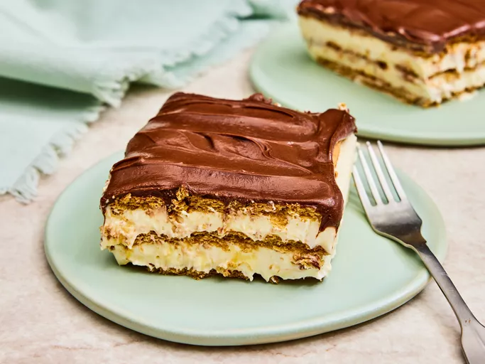

Chocolate Éclair

Description:
This chocolate éclair dessert is a no-bake pudding dessert that's so quick
and easy to make —
everyone loves it. I always keep the ingredients
on hand in case I need a quick dessert.
It's best if it sits overnight before serving.
Ingredients:
- 2 individual packages graham crackers
- 3 cups cold milk
- 2 (3 ounce) packages instant vanilla pudding mix
- 1 (8 ounce) container frozen whipped topping, thawed
- 1 (16 ounce) package prepared chocolate frosting
Steps:
- Gather all ingredients.
-
Line the bottom of a 9x13-inch pan with a single layer of graham
crackers.
-
Combine cold milk and pudding in a large bowl; whisk briskly for 2
minutes.
- Mix whipped topping into pudding mixture until combined.
- Spread 1/2 of the pudding mixture over graham cracker layer.
-
Top with another layer of graham crackers. Cover with remaining pudding.
Top with a final layer of graham crackers.
- Frost top with chocolate frosting.
-
Refrigerate for at least 2 hours before serving to allow graham crackers
to soften.
Thank you for reading and viewing this page :>